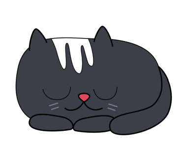
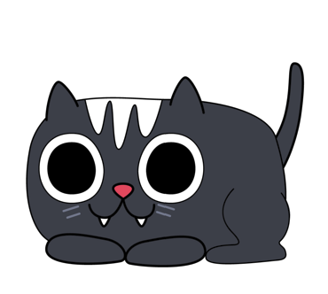
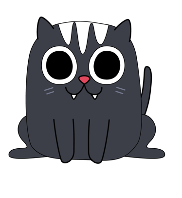
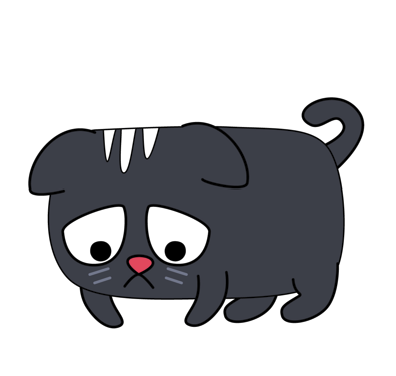
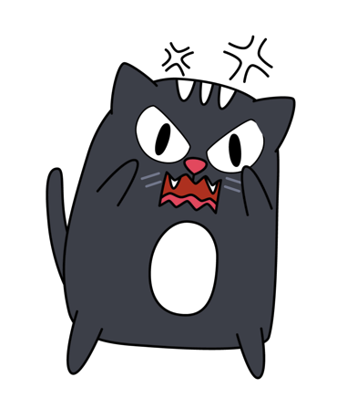
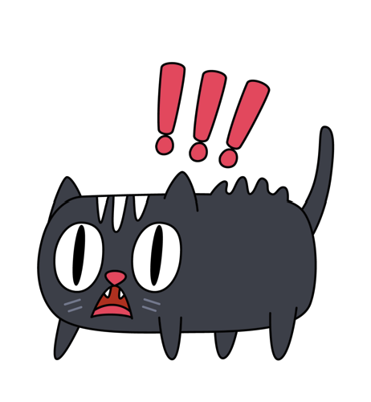
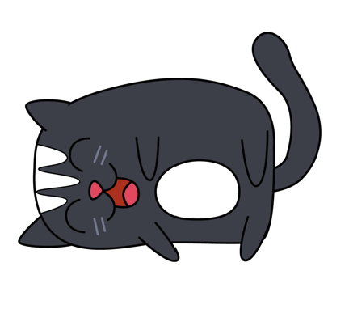
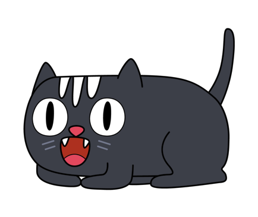
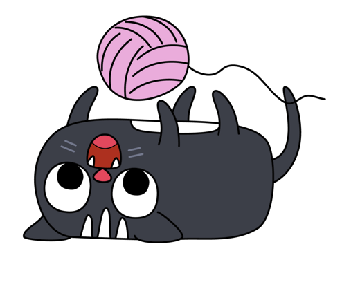
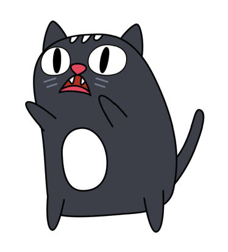

This virtual pet is inspired by my cat, and her name is Kat. She was given to me when she was a kitten as a birthday present from my Aunt. She is now around 12 years old, and her fur color is actually mixed with a bunch of other colors, but she mainly has black colored fur. She is very shy and easily frightened. She is usually not very talkative, but becomes vocal when she's hungry. She likes to sleep a lot during the day and play during the night.
I plan to use a set of ten distinct stages. The stages should show the emotional and activity stages of Kat. There should be a set of five interactive buttons for the user. Based on the emotional stage of Kat, the user should be able to react to her using the buttons. Kat's mood should randomly change after being idle. The first interaction with the Kat should be to wake her up since I want her initial state to be sleeping.
1. Sleep










I will be basing this virtual pet state machine on the infinite state machine from Project 1. I will add and make changes to support the multiple emotional states and transitions. The pet will begin in a sleep state, and once woken up, the state will change, and the user can react to it. Each interaction, such as petting, should cause a transition to a different state based on the pet's current mood. Also, I will include timers so that the pet stages are randomized to simulate mood changes.